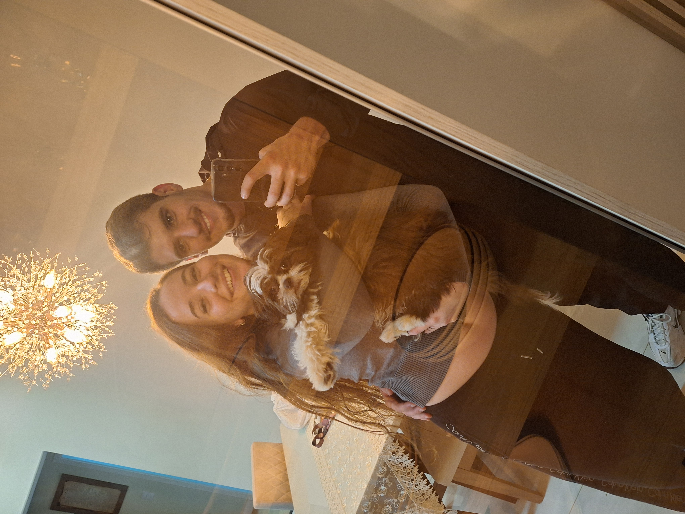
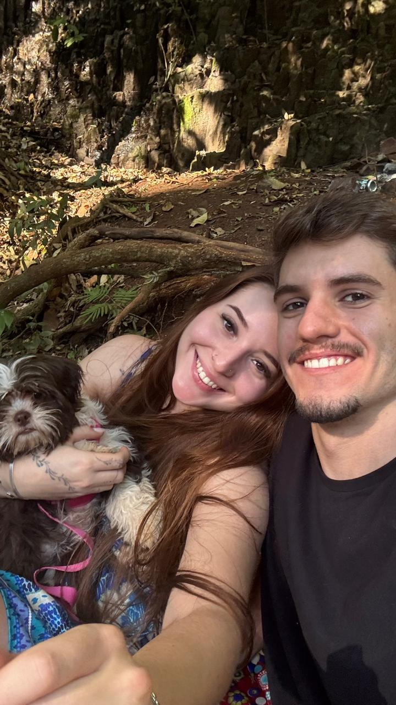

Tenho uma coisa para te dizer...

uma das nossas pequenas históriasMeu amor,
Eu simplesmente estava pensando em você e percebi que, às vezes, fico tão acostumado a ter você nos meus dias que esqueço de parar e pensar no quão incrível é isso.
Você apareceu na minha vida e foi ficando... nos meus pensamentos, nos meus planos, nas minhas vontades, nas coisas que eu vejo e penso “ela ia gostar disso” ou “preciso contar isso pra ela”.
Quando percebi, você já tinha conquistado um espaço enorme aqui dentro.
Gosto das nossas conversas, das nossas risadas, das nossas brincadeiras, das nossas provocações. Gosto de poder ser eu com você e gosto ainda mais de ver você sendo você comigo.
Minha gatinha, minha linda, minha gostosa... e, aparentemente, a muié que decidiu bagunçar completamente a minha cabeça. 😂❤️
Mas falando sério...
Eu gosto muito de você.
Muito mais do que às vezes consigo demonstrar.
E quanto mais eu te conheço, mais eu gosto. Mais vontade eu tenho de estar perto, viver coisas com você, conhecer lugares, fazer planos, rir de coisas idiotas e criar histórias que só nós dois vamos entender.
Eu quero mais dias com você.
Mais histórias.
Mais fotos.
Mais risadas.
Mais abraços.
Mais “lembra daquele dia?”.
É tudo isso que eu queria te dizer. E prometo que ainda vou conseguir me declarar também pessoalmente, só preciso perder umas travas que tenho do meu lado também... ❤️
Eu amo o que estamos construindo.
E amo ainda mais saber que isso ainda está só começando.
Não sei quantas páginas ainda vamos escrever dessa nossa história, mas espero sinceramente que sejam muitas.
Te amo muito, muito, muitoooo. 🌎❤️
